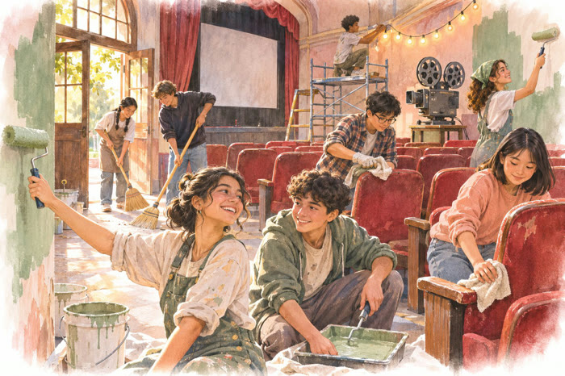

Listen to the text
Speed:

TOWN NEWS. A new youth centre was opened in the building of the old cinema "Zoria" last Saturday. Our reporter was there. The cinema was built in 1962, and for forty years it was the heart of the town. Films were shown there three times a day, and tickets were sold out weeks before every premiere. Then it was closed. For twenty years the building stood empty. The windows were broken, the walls were covered with graffiti, and the roof was damaged by rain. Two years ago a group of teenagers wrote a letter to the town council. "There is no place for young people in our town," they wrote. "Give us the old cinema, and we will bring it back to life." The letter was signed by 840 students. The council agreed, and the work began. The roof was repaired by a local building company for free. The walls were painted by volunteers. More than three hundred chairs were cleaned, and the old film projector was restored by a retired engineer, who had worked in the cinema in his youth. The graffiti on the back wall was not removed. "It is a part of the building's history," the teenagers decided. Instead, a famous street artist was invited, and a huge new picture was painted next to the old ones. Today the centre has a hall for concerts, a recording studio, a room for board games and a small cafe. Free workshops are held there every week. Dance, coding and photography are taught by students from the local college. "This place is run by young people," says the director, Ms Tetiana Vovk. "The timetable is made by a youth committee. Every decision is discussed and voted on." At the opening ceremony the red ribbon was cut by the youngest member of the committee, twelve-year- old Solomon. Then the first film in twenty years was shown on the big screen. It was an old comedy, and it was chosen by the retired engineer. More events have already been planned. A festival of school bands will be held in November, and a winter film club will be opened in December. The doors of the centre are never locked before nine in the evening. Come and see for yourself.
Tap any sentence to hear it again.
Сподобалось? На сайті ще більше матеріалів для вчителів!
Reader, презентації, ігри, діагностичні та контрольні роботи до підручників 1-11 класів.
Перейти на сайт materials.allaenglish.com